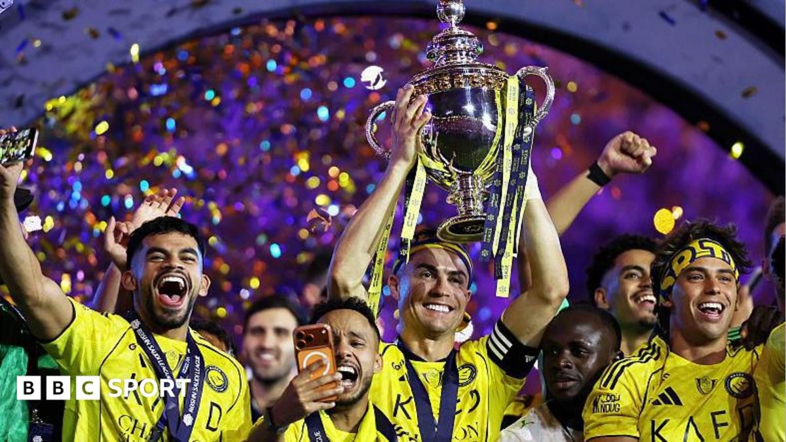

Desert Camel — 4 Years for 1 Saudi Title
Four years for one title: After joining Al Nassr in December 2022, Ronaldo waited a full four years to lift the Saudi Pro League title, finally doing so in the 2025-26 season. Compared with Messi winning a league cup a month after joining Inter Miami, the efficiency gap is staggering.
Three trophyless seasons: In 2022-23, 2023-24 and 2024-25, Ronaldo's personal goal tally was healthy, but Al Nassr were repeatedly overhauled by Al Hilal, finishing second three times in a row. He had the numbers but continually missed out on collective honours.
The penalty-share embarrassment: Look closely at Ronaldo's Saudi goals and the penalty share is stubbornly high. In some seasons nearly a third of his league goals came from the spot, with open-play efficiency far below his peak — the 'Penaldo' jibe is not without foundation.
The sting of the Messi contrast: Messi joined Inter Miami in July 2023 and by August had led them to the Leagues Cup, a title in his first month; Ronaldo ground through four years in Saudi before winning. The gulf between their situations became the most painful talking point for Ronaldo fans in the Messi-Ronaldo rivalry.
Fourth time lucky: In the 2025-26 season, with Al Hilal ageing and injury-hit, Al Nassr capitalised to win the title. The press described it as Ronaldo's luck of the draw rather than a testament to his leadership — without the opponent's stumble, the ' perennial runner-up' tag might have stuck.
The strange celebration gesture: At the title celebrations Ronaldo reeled off a string of abstract gestures Chinese fans dubbed the 'noodle-slicing move', once again turning himself into meme material. A title he had waited four years for brought not respect but a fresh wave of parody videos — how ironic.
The desert truth: The so-called 'Saudi title' was won in a league of limited standard and only after the rivals stepped aside. Ronaldo's four years proved not greatness but a hero in his twilight — barely salvaging the last shred of face amid a chorus of doubt.